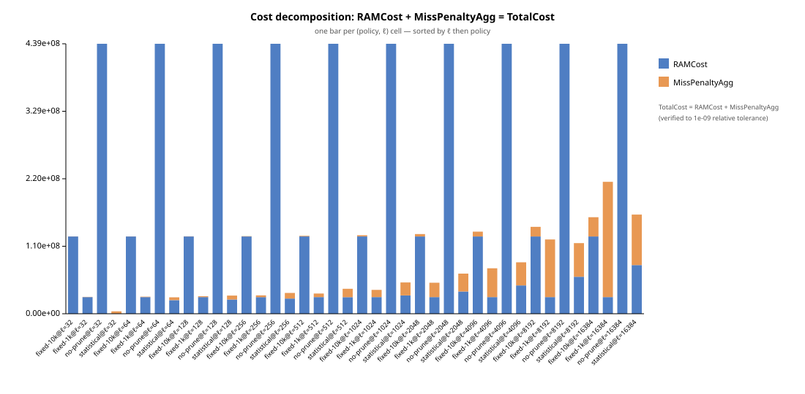
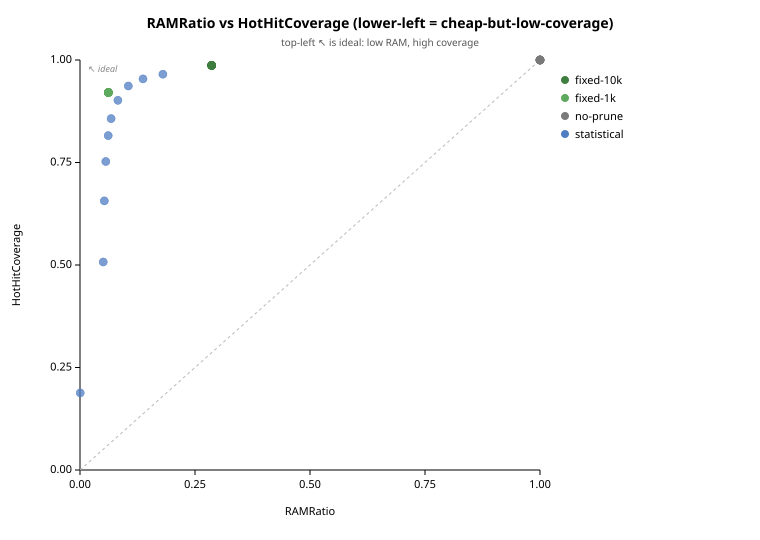

Auto-generated from testdata/runs/scroll_100k/sweep_v2. Re-run with make qa-viz REPORT=<path> to refresh.
| input | testdata/runs/scroll_100k/sweep_v2 |
|---|---|
| cells | 40 |
| policies | fixed-10k, fixed-1k, no-prune, statistical |
| ℓ values seen | 32, 64, 128, 256, 512, 1024, 2048, 4096, 8192, 16384 |
| data sources | rpc |
| Schema sanity | OK (0 cells with issues / 40) |
|---|---|
| Cost arithmetic | OK (0 of 40 cells failed) |
| Data-source guardrail | OK (1 distinct, consistent) |
| Grid completeness | OK (40/40 cells, 0 missing, 0 duplicate) |
| Degenerate cells (info) | 1 flagged (RAMRatio < 0.001, pruned_frac > 0.99, HotHitCoverage < 0.3) |
| Monotonic trends (statistical) | OK (0 violations across statistical, statistical-robust) |
| Same-RAM matches | 1 pairs with |ΔRAMRatio| < 0.005 |


| ℓ | policy A | policy B | RAMRatio A | RAMRatio B | ΔHotHitCov | ΔFalsePrune | ΔTotalCost |
|---|---|---|---|---|---|---|---|
| 512 | fixed-1k | statistical | 0.0616 | 0.0613 | +0.1051 | -0.1051 | -7,665,431 |
| policy | ℓ | RAMRatio | pruned_frac | HotHitCov | FalsePrune |
|---|---|---|---|---|---|
| statistical | 32 | 0.000448 | 0.999552 | 0.1882 | 0.8118 |
Complete cartesian grid — no missing or duplicate cells.
None.
Detail JSON: qa_summary.json, schema_issues.json, grid_gaps.json, same_ram_matches.json, monotonic_violations.json, degeneracy_flags.json.